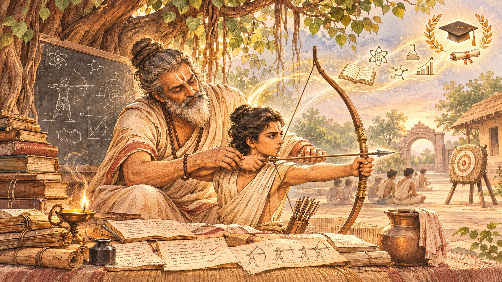

Create and run serious assessments. Then see the detail behind every result, so your next lesson, intervention or practice set can start from evidence.
✳Built for the full assessment cycle: create, deliver, review, and teach forward.

GURU · SHISHYA · SHARED INQUIRYGuidance, put into practice
विद्या ✳
ASSESSMENT AUTHORING✳FULL MOCKS✳EXAM CONTROLS✳PROCTORING OPTIONS✳TIME ANALYSIS✳HIT RATE✳ACCURACY BY CHAPTER✳DETAILED REPORTS✳ASSESSMENT AUTHORING✳FULL MOCKS✳EXAM CONTROLS✳PROCTORING OPTIONS✳TIME ANALYSIS✳HIT RATE✳ACCURACY BY CHAPTER✳DETAILED REPORTS✳
Assessment authoring, full mocks, exam controls, proctoring options, time analysis, hit rate, accuracy by chapter and detailed reports.
01 / THE PLATFORM
From syllabus to next lesson.
Build the paper, run the exam, and follow the answers back to the ideas students understand—or are still working through.
01 / DESIGN THE PAPER
Start with the syllabus map.
Choose the subject and chapters, then shape a focused test or a multi-section mock. Set the question count, marks, time limit and review rules for this paper.
Subject and chapter tests
Full mocks with sections
Question types, marks and time
One clear scope makes it easier to see what the result means.
02 / DESIGN THE QUESTION
Make wrong choices useful.
For a question, the distractor engine can suggest plausible wrong answers based on common mistakes. Check each option against the solution before it goes into the paper.
Target a chapter and concept
Surface a common misconception
Review and approve every option
A wrong answer can show the idea a student is mixing up.
03 / RUN THE EXAM
Set the conditions for test day.
Choose when students can open the paper, how long they have, and when they can review answers. Responses save as they work, so a refresh or lost connection does not erase their attempt.
Schedule access and time limits
Set the answer review policy
Optional Safe Exam Browser and webcam checks
Extra exam controls are set for each assessment when your school needs them.
04 / TEACH FROM THE RESULT
Follow the answer to the next lesson.
Compare results across the class, each subject and each chapter. Open a question to see which options students picked, what they skipped, and where the same misunderstanding appears again.
Find chapters the class needs to revisit
Spot a repeated mistake or trip point
Choose the next practice or reteach
Go from “the score fell” to the chapter and question that explain why.
A useful paper tests the idea you taught and makes common mistakes visible. Choose the chapters and skills; the AI can suggest believable wrong answers, and you review each one against the solution before students see it.
01 / EXAM-SCOPED CONCEPT TAXONOMYScoped to the exam and subject
SUBJECTPhysics
CHAPTERRotational motion
CONCEPTMoment of inertiaHow mass is distributed around an axis
SUBCONCEPTS & TRIP POINTSChooses the wrong axisUses the wrong body modelConfuses a prerequisite idea
CURRICULUM METADATAChapter · concept · subconcepts · known trip points
Misconception = a wrong belief about the concept. Prerequisite gap = missing knowledge it depends on.
ILLUSTRATIVE ITEM TARGETApply the parallel-axis theorem to a shifted axis.Concept: moment of inertia · Skill: select the correct reference axis
✓ CORRECT REASONINGIdentifies the reference axis and applies the shift relation.
01 TRIP POINTUses the distance where the squared distance is required.
02 TRIP POINTMeasures the shift from the wrong axis.
03 PREREQUISITE GAPMixes up the object's radius and the separation between axes.
03 / VERIFYGrounded in the solutionDistinct from other optionsPlausible for a partial understanding
04 / AFTER THE ATTEMPTHypotheses meet real student responses.
See which options were chosen, by whom, and how often. Follow the signal from class and subject down to the concept, question and student—then decide what to reteach or practise.
Illustrative concept and error paths · Generated distractors pass through verification before they enter an assessment.
03 / REPORTS THAT KEEP OPENING UP
From class patterns to the thinking behind one answer.
Start with the whole cohort. Follow a signal through subject, section, paper, chapter, question and student attempt. Every layer gives a teacher a more specific next move.
✳
Performance reportCLASS VIEW / ILLUSTRATIVE DATA
All subjectsRecent papers⌄
Illustrative interface · sample values, not live student data
STUDENTS IN VIEW126across selected sectionsPAPERS INCLUDED08subject tests and mocksNEED A CLOSER LOOK23learners flagged by recent patternIMPROVING31learners moving upward
How the class is trackingScore bands · all selected papers
CLASS
126learners
Needs support 24%
Building 46%
Strong 30%
See distribution shift as new papers are added.
Subject balanceStanding by subject and overall
COMPARE
Physics76
Chemistry52
Mathematics63
All papers81
Filter by grade, section or individual paper.
Chapter and concept signalsWhere answers go wrong, get skipped or recover
TOP NEEDS
CHAPTERRIGHTWRONGSKIPPEDRECOVERED
Physics · Laws of Motion38%42%20%+8 pts
Chemistry · Haloalkanes42%37%21%+3 pts
Maths · Matrices56%32%12%+11 pts
Most repeated pattern: the method is chosen correctly, then breaks at a sign change in multi-step problems.
Students to look atExample signals from the selected class view
Overall percentile by attemptRank range, subject standing and score together
4 PAPERS
Balance across subjectsWhere this student stands in class
PROFILE
Physics72
Chemistry41
Mathematics64
RECURRING CONCEPTReaction mechanismsMissed again on a later paper
QUESTION TRACE · SAMPLERecalled the rule→Missed its condition→Chose the distractor→Review the step-by-step reasoning
ILLUSTRATIVE PAPER VIEWFull mock · Physics sectionQuestion difficulty · distractor choice · pace · stamina
04 / 06 sections
Question-level accuracyWhich items separated strong from developing students
28 ITEMS
Q0182%
Q0267%
Q0339%
Q0473%
Q0528%
Q0655%
ITEM DISCRIMINATION · SAMPLEQ05 separated the top quartile28% right overall · 61% of high scorers · distractor C attracted 34% of the lowest quartile
Where marks were lostAnswer pattern across the paper
ERROR TYPES
Concept gap28%
Wrong method46%
Careless slip16%
Left blank24%
TOP MISCONCEPTION · SAMPLESelected a familiar formula outside its conditions
Pace and accuracyFast misses, careful solves, stuck questions
ATTEMPT RHYTHM
RUSHING
FLUENT
STUCK
CAREFUL
Stamina through the paperAccuracy by quarter
SECTION PACE
72%First
61%Second
58%Third
43%Last
ATTEMPT COVERAGE94% completed118 of 126 learners submittedNOT SAT08 learnersOpen the roster listINTEGRITY EVENTS03 flaggedTeacher review availableSESSION MODESupervisedBased on enabled exam controls
Class pattern → student detail → question evidenceAll values shown are illustrative
TEACHER · STUDENTS · SHARED INQUIRY
A TEACHER'S ATTENTION, MADE VISIBLE
Every score points back to a learner.
Find the chapter, the repeated mistake, and the moment understanding breaks down. Then bring that detail into the next lesson—where the teacher's guidance matters most.
THE REPORT SUPPORTS THE RELATIONSHIP. THE TEACHER LEADS IT.
01 / COHORT
Read the class at a glance.
Compare score bands, subject balance, sections and change over time. Surface who is slipping, who is improving, and where one subject needs the next lesson.
02 / STUDENT
See each student across subjects.
Follow personal trends, relative standing, repeated gaps and attempt patterns. Move from “needs help” to the topic and paper that show why.
03 / CONCEPT
Find the chapter beneath the subject.
See which chapters and concepts are being missed, skipped or recovered, and whether a gap returns on the next paper.
04 / REASONING
Separate a knowledge gap from a method error.
Review misconception patterns, wrong methods, careless slips, unanswered questions and the distractors students chose.
05 / PAPER
Inspect every question in context.
Compare accuracy by question, difficulty and discrimination. Trace answer patterns, skipped items, paper pace and stamina from first section to last.
06 / FOLLOW-UP
Turn a report into a teaching move.
Open the student, paper or question behind an insight and plan focused revision, a retest or a targeted intervention.
One report, many lenses. Every signal points to a next step.
One connected loop for the work teachers already do: prepare the assessment, give students a dependable attempt, and use the report to plan what comes next.
01 / CREATE
Shape the assessment
Build a subject test or combine sections into a full mock.
02 / ASSIGN
Set the conditions
Publish to the intended group and set the attempt and review policy.
03 / REVIEW
Read the report
Inspect the result at student, subject and question level.
04 / RESPOND
Teach the next step
Use the observed gaps to guide follow-up and focused practice.
05 / THE NEXT LESSON
Technology can widen a teacher's reach. Care gives it direction.
Use a detailed report to notice each student's next step, make time for focused practice, and keep the human connection at the centre of learning.
GUIDANCE THAT MEETS EACH STUDENT
06 / EXAM INTEGRITY
Choose controls that fit the assessment.
Exam integrity is configurable by paper. Safe Exam Browser can be required for selected exams, while webcam proctoring supports instructor review in supervised settings. Set expectations for students and choose the mode that fits your institution.